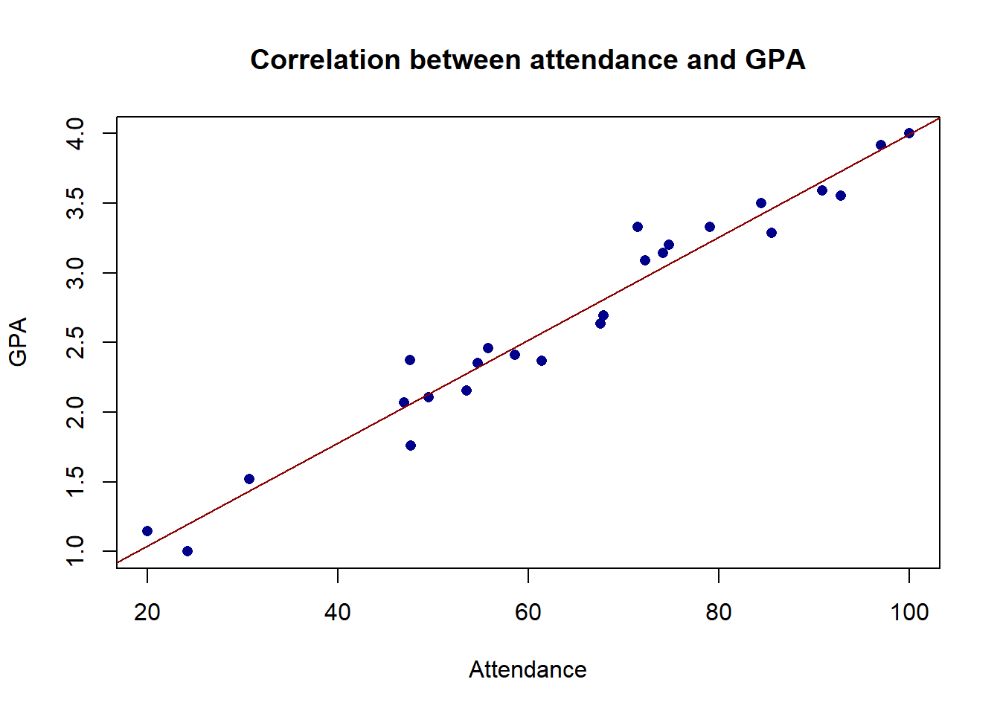

An Introduction to R
Designed by Allison Horst, @allison_horst
To facilitate this introduction and avoid installing R on your computer, we will use an interactive version of R provided by DataCamp. Interactive windows (1) allows to have part of the code already written down, which is convenient for this introduction and (2) do not require you to install R on your computer. The same codes that we’ll learn today can be used on a standalone R application such as RStudio.
Below you can see an example of an interactive R window. On the left side of the window (under the tab titled script.R) is where you will write code to be executed. To run code you have written, click the yellow Run button and observe how the right side of the window gets filled with information. A copy of your code will show up in black, and if no errors were made the answer will be returned right below in brown text. Error messages are red and begin with Error:.
If you want to install R on your computer in the future, you can find some good instruction here.
Quick intro to R
R is built as a simple calculator. You can perform basic artimethic operations as shown below (click on the yellow Run button).
The advantage of R is that you can save multiple information into “objects” and use them to perform operations. “Objects” are just repository of information - numbers, text, images.. We can assign any name to an object. We assign content to an object using <-.
Objects are particularly useful to store multiple information at the same time. For instance, let’s create two objects. The first object will store the names of 5 of you. The second will store information on how long it takes to these students to get to UIC. Some notes to know:
| Code | Meaning |
|---|---|
| 2 | A piece of numeric information |
| “Mary” | A piece of text information |
| vector_name <- c() | Combines multiple pieces of information into one vector |
| matrix_name <- cbind() | Combines multiple vectors into a matrix |
| dataframe_name <- as.data.frame | Convert a matrix into a dataframe which are databases in R (most common format) |
Objects can store as much information as we want - we are talking about millions of data!
To start, let’s imagine we have a small dataframe which contains information about 5 students: their name and how many minutes it takes them to come to UIC. The dataframe is called data.
We can look at the object but also use some “functions” to obtain more information. “Functions” in R are not very different from Excel functions - they are pre-packed codes that extract information from an object.
For instance, what is the average commuting time across all students? How long is the longest commuting time? And the shortest?
We can also visualize data on a graph. In this case, a barplot will allow us to compare time across all students.
We can customized graphs. R is really powerful in creating graphs - we can change colors, style, titles, labels… pretty much anything. Within each function, we have several “arguments” where we can change these settings.
Let’s look at some command to change title, labels, and colors. Feel free to customize the graph as you like.
We can also add a line to show how many students have a longer than average commuting time.
We can try another graph. In this case, we can plot the correlation between attendance and GPA.
- Look at the dataframe. The name is ‘data_attendance’
- What is the average attendance in the class? Attendance is expressed as percentage points.
- What is the average GPA?
- Plot the relationship between GPA and attendance. Instead than a barplot, we are going to use a scatterplot. The command is “plot”.
- Pro-suggestion: once you created your scatterplot, if you want to change the shape of the dots, you can use the pch command and the table below (e.g., pch = 16)

Shapes
Regression
We can also use R to run a simple regression.
my_regression <- lm( gpa ~ attendance, data = data_attendance)
summary(my_regression)##
## Call:
## lm(formula = gpa ~ attendance, data = data_attendance)
##
## Residuals:
## Min 1Q Median 3Q Max
## -0.30124 -0.12469 0.02983 0.10183 0.38513
##
## Coefficients:
## Estimate Std. Error t value Pr(>|t|)
## (Intercept) 0.302039 0.105716 2.857 0.00892 **
## attendance 0.036947 0.001559 23.692 < 2e-16 ***
## ---
## Signif. codes: 0 '***' 0.001 '**' 0.01 '*' 0.05 '.' 0.1 ' ' 1
##
## Residual standard error: 0.1664 on 23 degrees of freedom
## Multiple R-squared: 0.9606, Adjusted R-squared: 0.9589
## F-statistic: 561.3 on 1 and 23 DF, p-value: < 2.2e-16And again, we can plot our correlation using a scatterplot and including a regression line.
plot(attendance, gpa,
main = "Correlation between attendance and GPA",
xlab = "Attendance",
ylab = "GPA",
col = "darkblue",
pch = 16)
abline(my_regression,
col = "darkred")
Now it’s your turn. I have uploaded some data called data_enrollment which includes two variables: income and college_enrollment.
- Look at the average value of both income and college_enrollment
- Run a regression that predict the likelihood to enroll into college based on income
- Plot your observations and regression line - make the dot into a squared shape, colored red, with a regression line in green.
Some notes
Something that might be helpful is to learn how to upload your own data. The easiest way is to save them in a .csv file.
# First you need to set your working directory (setwd)
setwd("C:/Users/ffusi/Box/Website/PPOL405_Website")
#Then you read your csv data. Remember to name them.
my_data <- read.csv("CityData.csv")
#Look at your data.
my_data## City State Population2019 Population2020 DensityKm2
## 1 New York New York 8601186 8175133 11,056
## 2 Los Angeles California 4057841 3792621 3,343
## 3 Chicago Illinois 2679044 2695598 4,550
## 4 Houston Texas 2359480 2099451 1,431
## 5 Phoenix Arizona 1711356 1445632 1,276
## 6 Philadelphia Pennsylvania 1576596 1526006 4,537
## 7 San Antonio Texas 1565929 1327407 1,312
## 8 San Diego California 1453775 1307402 1,728
## 9 Dallas Texas 1379735 1197816 1,567
## 10 San Jose California 1033519 945942 2,248
## 11 Austin Texas 1001104 790390 1,205
## 12 Jacksonville Florida 920984 821784 476
## 13 Fort Worth Texas 913939 741206 1,023
## 14 San Francisco California 897536 805235 7,388
## 15 Columbus Ohio 890228 787033 1,572
## 16 Charlotte North Carolina 889019 731424 1,121
## 17 Indianapolis Indiana 863771 820445 923
## 18 Seattle Washington 766893 608660 3,532
## 19 Denver Colorado 732144 600158 1,844